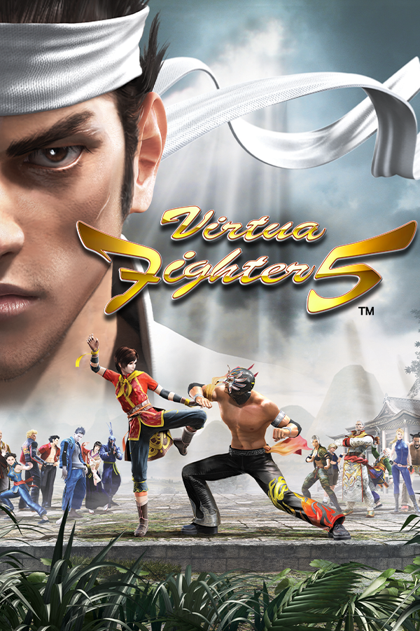

Virtua Fighter 5 REVO
Every archived year-end list appearance, including placement and points earned.
About the Game
Virtua Fighter 5 R.E.V.O. - 30th Anniversary Edition Celebrate the 30th anniversary of the first 3D fighting series with this luxurious anniversary edition. Includes: - Virtua Fighter 5 R.E.V.O. - 30th Anniversary Swimsuit Costume Set - Virtua Fighter 30th Anniversary Soundtrack Collection - Virtua Fighter Pre-Production Artwork - Virtua Fighter Legendary Pack DLC - Yakuza series Collaboration Pack DLC - 30th Anniversary Ranking Titles - 30th Anniversary Wallpaper Set ■ VF 30th Anniversary Swimsuit Costume Set: Includes outfits for all characters. Show off your favorite beachwear while pummeling all opponents! ■ The VF 30th Anniversary Soundtrack Collection: The definitive anthology. Featuring every Virtua Fighter title's original soundtrack plus 220 unreleased tracks from the series history - including "Burning Souls" the new opening song for Virtua Fighter 5 R.E.V.O, performed and arranged by SEGA legend Takenobu Mitsuyoshi. ■ Virtua Fighter Pre-Production Artwork: An exclusive Artbook containing sketches and other never-before-seen art from the original VF's pre-production. ■ DLC: The Legendary Pack DLC includes character models, customization items, stages, and BGM from the original Virtua Fighter.* The Yakuza Series Collaboration Pack features character costumes, BGM, and stamps from the "Yakuza" series. *The designs from the original Virtua Fighter have been remade for this edition. *The stages from the original Virtua Fighter cannot be used in online matches. ■ 30th Anniversary in-game Rank Titles ■ 30th Anniversary Wallpaper set About the Game Exclusive set of character customization items featuring SEGA's legendary consoles! Content includes: - Additional Customization Item SEGA GENESIS - Additional Customization Item SEGA Saturn - Additional Customization Item SEGA Dreamcast *Items will be available after downloading the content. *All items can be equipped via the customization menu. *A special 20% off pre-order discount will be applied if pre-ordered or purchased by February 3, 2025 at 14:59 (UTC). Please note that the “Sega Hardware Custom Item Set” will be included if pre-ordered or purchased during same period and won't be made available for purchase after that. NOTE: The logo on the Dreamcast Customization pre-order bonus item will be blue for users in the following regions: Andorra, Austria, Belgium, Czech Republic, Slovakia, Denmark, Finland, France, Germany, Greece, Hungary, Iceland, Ireland, Italy, Liechtenstein, Luxembourg, Monaco, Netherlands, Norway, Poland, Portugal, Spain, Sweden, Switzerland, United Kingdom. Virtua Fighter 5 R.E.V.O. Will your Kung-fu be enough?! The legendary fighting series makes its Steam debut with Virtua Fighter 5 R.E.V.O.! Challenge the greatest fighters in the world in the ultimate remaster of the classic 3D fighter,now featuring Rollback netcode support, gorgeous 4K graphics, and all the bone-crunching, martial arts combat of the renowned original. Battle through classic VF modes like Arcade or Rank Match, create your own custom online tournaments and leagues with up to 16 players, or learn from the best in Spectator Mode. Master your fighting style to defeat all challengers in the Fifth World Fighting Tournament and become a Virtua Fighter legend! Features: • The Ultimate Edition of this legendary game: Rollback Netcode support, gorgeous 4K visuals with updated high-res textures and more. • Custom Combatants: Enter the ring with one of 19 playable characters. Master each of their unique fighting styles and customize them with distinctive costumes and items. • The Full Experience: Enjoy the pinnacle of Virtua Fighter as you battle it out across your favorite modes like Rank Match, Arcade, Training, and Versus • Crush the Competition: Take on challengers from around the world as you compete with up to 16 players in new online modes including Tournaments and League.
| Developer | Ryu ga Gotoku Studio |
|---|---|
| Publisher | SEGA |
| Genres | Action |
| Platforms | PC |
SingleplayerSteam AchievementsMultiplayerFull controller supportSteam CloudAtmosphericGreat SoundtrackOpen WorldClassicLocal MultiplayerRetroPvP
Where to Buy
Game information provided by RAWG.
Points by Year
List History
| Year | Source | List | Placement | Points |
|---|---|---|---|---|
| 2025 | GameSpot | The Best Games Of 2025 | Unranked | 1 |